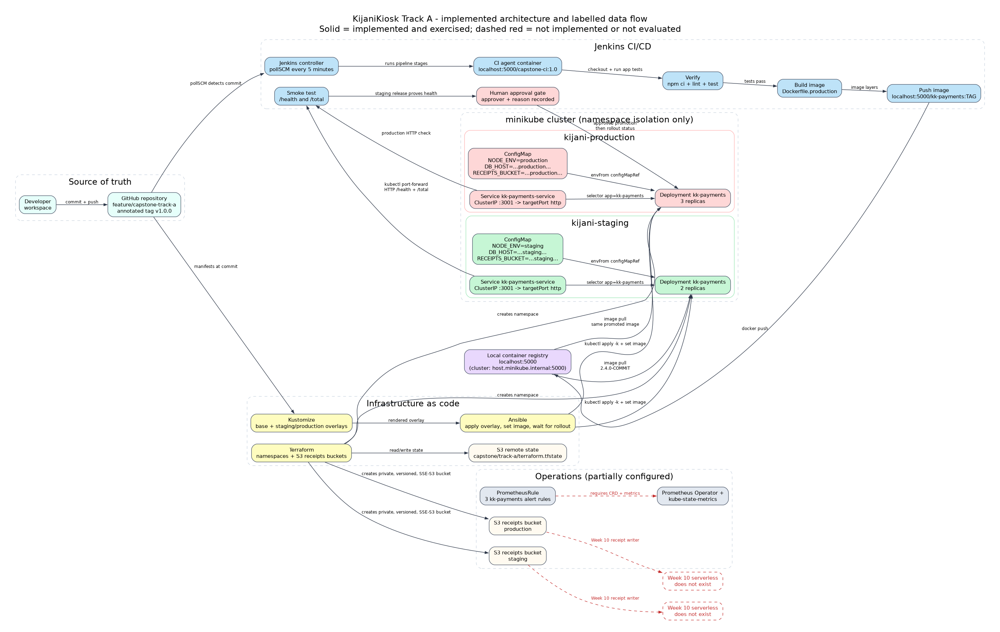

Dalton Wambui | v1.0.0 | feature/capstone-track-a
Repository: github.com/mwekundujohn-ship-it/kijaniosk-devops-foundation
Stated boundary: Week 10 serverless receipts are not implemented. The bucket and environment key are prepared and the gap is not hidden.

Design rule: build once, promote the same tag. Production never rebuilds from a different commit.
Failure rule: staging smoke or version assertion fails before the approval gate. The operator never approves an unproven artifact.
Creates both namespaces and separate private, versioned, SSE-S3 receipt buckets. State lives in S3, not in Git.
One base Deployment and Service. Overlays change namespace, replicas, labels, image placeholder, and ConfigMap values.
Applies the overlay, then sets the exact image tag and waits for rollout. Apply alone is not a release.
| Key | Staging | Production |
|---|---|---|
NODE_ENV | staging | production |
DB_HOST | ...staging... | ...production... |
RECEIPTS_BUCKET | staging bucket | production bucket |
APP_VERSION | Not in ConfigMap: baked into the immutable image | |
/health.http.status=ok and service=kk-payments.POST /total returns exactly 42 for two synthetic line items.2.4.0-2a84c81.capstone/evidence/jenkins-build-2/console.txtstaging-state.txt, production-state.txtstaging-configmap.txtDemo adds: approval reason record, negative smoke-test failure, and pod self-healing. Text claims are paired with live commands, not only screenshots.
apply -k could reset the image to the overlay placeholder after Jenkins pushed the real tag.APP_VERSION was treated as runtime config instead of immutable build metadata./health until the served version equals the image tag.apply -k, then set image, then rollout status.2a84c81.Drafts for the smoke test, Ansible tasks, and environment configuration.
Accepted an old pod as healthy; let apply reset the image tag; put build metadata in a ConfigMap.
Version assertion, explicit set-image, immutable version. Each correction has a commit and a live check.
Governance rule: no fabricated peer review, no invented build results, no screenshot without a command behind it. The eight-field log records the prompt, output, error, correction, evidence, and checklist item.